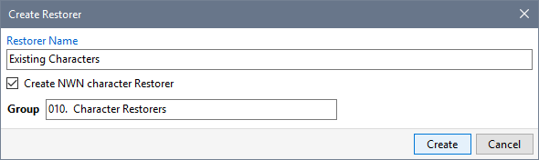
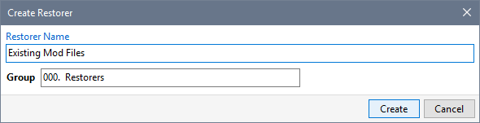

You can use Restores to create a backup of all the files you have copied to your Neverwinter Nights installation folders.

- Click Create Restorer from the Manage menu, tick (check) Create NWN character Restorer and click Create to make a copy of all your character files.

- Click Create Restorer from the Manage menu and click Create to make a copy of all your existing Mod files.

- You are now able to restore your character and Mod files at any time.
Related Topics
Save your customised INI files
Move non-NIT Mod folders to the Installer Tool
Create Restorers to backup installed Files
Create NIT Mods from Restorers